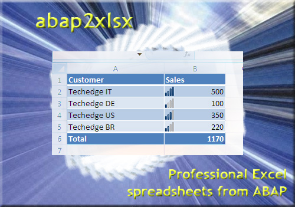

ABAP in the wild!
SAP Open Source Summit 2020SAP SE
Lars Hvam, @LarsHvam
INVIXO
House Rules
|
Slides: https://larshp.github.io/abap-in-the-wild/ Feel free to use the chat, "panelists and attendees" QnA open, will answer questions in the end if time permits |
Disclaimer

Open source
Test in sandbox
The Pioneers
SAP Teched Vegas, 2006, Demo JamEd Herrmann
Dan McWeeney
abap2xlsx
Generate your professional Excel spreadsheet from ABAP
Ivan Femia
Code Exchange
Code Exchange 2.0 – Blog Post| started ~5 years ago | ~80000 lines | ||
| ~3700 commits | 7.02 and up | ||
| 89 contributors | MIT License |
abapGit Design Goals
- Easy installation
- Easy upgrade
- Small system footprint
- Code readable in git repository
Works With

| |
 |

|

Major ABAP SDKs

https://dotabap.org
 | Steampunk & abapGit |
First announcement @ Keynote TechEd Las Vegas in 2017

The first official release of an  ABAP product with an Open Source
dependency!
ABAP product with an Open Source
dependency!
ABAP product with an Open Source
dependency!
| Why? |
| Modernization of the ABAP server | |
| Paradigm change on how to transport in the cloud | |
| Integration of ABAP & Git | |
| Custom Code Migration from onPrem to Steampunk |
| How It's Integrated? |
| Transformation from Z- to SAP Namespace | |
| Extended with Enterprise Features and adopt to Steampunk boundaries | |
| Tighly coupled with abapGit ADT Plugin |
| abapGit ADT Plugin |
|
Next Steps |
| Contribution of new Restful ABAP Programming Model specific ABAP Objects | |
| Merge of community version to Steampunk on a regular basis | |
| Review and enhance current handler with official APIs | |
| abapGit ADT Plugin will continue to be developed only under Open Source |
Lets get wild!
REPORT zfib01. PARAMETERs: p_n TYPE i DEFAULT 13. START-of-SELECTION. PERform run. DATA: r TYPE i, b. FORM run. PERFORM f USING p_n r. WRITE r. ENDFORM. |
* this form calc fibonac nu FORM f USING n r. data n1 TYPE i.DATA: n2 type i. data: r1 TYPE p, r2 TYPE f. CLEAR r1. n2 = n - 1. n1 = n2 - 1. if n = 1. r = n. ELSEIF n:= 2. MOVE n TO r. SUBTRACT 1 FrOm r. ELSE. PERFORM f USING: n1 r2, n2 r1. * PERFORM f USING n2. ENDIF . r = r + r1 + r2. ENDFORM. |
SAP Code Style Guides
https://github.com/SAP/styleguidesabaplint
lint, or a linter, is a tool that analyzes source code to flag programming errors, bugs, stylistic errors, and suspicious constructsCustom open source, everything in TypeScript
https://abaplint.org
syntax
rules.abaplint.org
playground.abaplint.org
abaplint - Use Cases
Aaand then
- More quick fixes
- Serverless
- Upport (abapGit to 740sp08)
- Downport (abapGit to 702)
vscode |
Notable Mentions, ABAP related
|
jfilak/sapcli This tool provides command line interface for ADT which should help you to build your CI tools fidley/ABAPFavorites ABAP Favorites Eclipse Plugin andau/abapCI AbapCI is an Open Source Eclipse plugin which provides various Continuous Integration (CI) tools for the ABAP development with Eclipse |
#ABAPisNotDead
https://larshp.github.io/abap-in-the-wild/@myBecks, @LarsHvam

Survey
Links
|
http://abapgit.org https://dotabap.org https://abaplint.org |